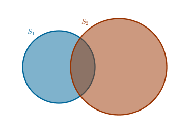
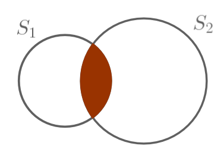

1) Purpose
2) Item, Collection, Order, Repetition, Set, Multiset
3) Basic Five: Addition, Inclusion Exclusion, Multiplication, Subtraction, Division
4) Sets
5) Multisets
6) Applications
1) Purpose
Since academic information is highly hierarchical, it is vital to be introduced to the very basic ideas in any given discipline before moving on to bigger and better things. However, sometimes it so happens that these basic ideas are not introduced in high (or middle) school in the hope that "it will be taught in college" and sometimes these ideas are not mentioned in college on the assumption that "it was supposed to be studied in high (or middle) school". This phenomenon is less likely to occur in such disciplines as geometry, algebra or physics but, based on my personal experience, it is more likely to occur in combinatorial analysis.
As such, the purpose of this tutorial is to cover this potential gap by exploring the five basic counting principles and four basic problem types - permutations and combinations with and without repetitions which, while giving an introduction to the discipline, can be used to solve a wide range of the entry level combinatorial problems.
Full disclosure:
I do not claim to have obtained any of the upcoming results. The information presented here is so basic that it can be treated as tribal knowledge passed by word of mouth from generation to generation. My only input is the organization of the material - thinking of and gathering all the relevant pieces in one place and a slightly more lengthy than usual treatment of the basic concepts of items, comparison and order.
2) Lingo
In the modern branches of Mathematics (and Physics) it has become customary to not define certain basic or fundamental concepts since, as the wisdom of ages teaches us, it is simply impossible to define such concepts in a totally unambiguous way, without circular references.
In his axiomatization of Geometry, for example, Hilbert did not define such fundamental geometric objects as point, straight line and plane. In various Mathematical Analysis and Number Theory courses the concept of number is not defined - we are given descriptions of various types of numbers - whole, rational, irrational, real, complex, prime, even, odd, etc. but we dare not to ask what that object that we refer to as number actually is.
On a similar note, when in Physics we ask "What time or space is?" we are usually told what the object in question does, flows or bends/curves, but not what it actually is.
In Combinatorial Analysis we will use such fundamental concepts as item, order, set. It is best to state explicitly early on that we will not attempt to define these concepts but will rather present a description of these concepts.
2.1) Item
An item is anything we want it to be. Item's synonyms are object, entity, element, member. An item is a rather sweeping and an all encompassing abstraction birthed by the given problem. For example: a letter, a word, a digit, a number, a marble, a bowl of marbles, a star, a constellation and so on, are all items.
For any two items \(a\) and \(b\) we define an operation of primitive comparison which for our purposes yields only one of only two mutually exclusive outcomes:
- "equal", these two items are identical or the same
- "not equal", these two items are different or distinct
Consequently, let us call the "equal" items indistinguishable and let us call the items that are "not equal" distinct. Formally:
$$a = b$$ $$a \neq b$$where the "equal" and "not equal" signs absorb the arbitrary definition of comparison.
For example, in one case an item "spoon" may be "equal" to another item, "fork", because their commonality, in the current context, is based on the intended usage of these items and then, based on that criteria of comparison, "spoon" is "not equal" to "barbell".
In a different case "spoon" may very well be "equal" to "barbell" because both items are made out of metal and, since the material of which the items are made is the base for commonality in this particular context, "spoon" is "not equal" to "fork" because "fork" is plastic.
An early lesson to take away from this is that in combinatorial analysis things change very quickly and very easily. In an academic parlance we would say that, in general, Combinatorial Analysis is a low constraint discipline. Further, it may be beneficial to attach a concept of property to an item. Any given item may have multiple properties but items' comparison should be performed on one property at a time basis.
Though there are always exceptions to the rules, generally - within the boundaries of the current problem or once the problem statement has been formulated - we take it that the individual items become and stay fixed or frozen qualitywise, meaning that they:
- preserve their identity and do not morph into something else entirely
- remain wholesome - undividible any further
for the "duration" of a given problem.
A multitude of such items forms a collection.
2.2) Collection
A collection is a multitude of items that have something in common. That commonality can be long lasting or it can be temporary and fleeting.
Collections are very flexible, fluid and dynamic - items can be thrown out of or into a collection any time we want. All the items in a collection are considered to be equivalent for the counting purposes - even if an item "apple" is different from an item "orange" when compared based on its look and feel - still both items are fruits and hence can be treated uniformly when counted.
Collection's synonyms are list, group, pile, assortment, arrangement. A sample collection, for example, can be an assortment of characters in your favorite language that amounts to a meaningful word:
$$S = \{m, a, t, h\}$$or not a meaningful "word":
$$S = \{h, t, a, m\}$$Here \(S\) is a shorthand notation for a collection. The braces \(\{\) and \(\}\) delineate the boundaries of a collection. The commas \(,\) delineate the boundaries of the items within a collection and the braces do so for the first and the last items. There are other ways to specify a collection but the one above is all we will need.
To save us some typing we will avoid the braces and the commas often - when the items are single digits or letters.
For any two collections we define an operation of aggregate comparison as follows. We assume that a collection of natural numbers \(N\) is already given to us, axiomatically perhaps. We represent an arbitrary collection of items conceptually as a tight series of buckets \([ \; ]\) with no space in between them. The sample:
$$math$$collection then temporarily becomes:
$$S = \{[ \; ] \; [ \; ] \; [ \; ] \; [ \; ]\}$$To each consecutive bucket we assign one consecutive natural number. Which end or extremity of the collection we start this enumeration process from does not really matter as long as we are consistent across the operations on multiple collections. We can enumerate the items right-to-left or left-to-right. It also does not really matter which integer we assign to the very first bucket. Traditionally we start with a \(1\) and we move left-to-right:
$$S = \{[ \; ]_1 \; [ \; ]_2 \; [ \; ]_3 \; [ \; ]_4\}$$Into each bucket in a collection we place exactly one item:
$$S = \{[m]_1 \; [a]_2 \; [t]_3 \; [h]_4 \}$$and introduce the following notations:
$$|S| = 4$$ $$S[3] = a_3 = t$$The vertical bars mean "the number of items in a collection" or collection's "size" or "length" which is four in this case.
The square brackets mean "the contents of the bucket whose ordinal position within the collection is given" which in this case is \(t\) since in \(S\) it is in the bucket number three.
Since our bucket-based representation of a collection is only conceptual, we will still use the traditional notation to record a collection:
$$S = \{m, a, t, h\}$$but if and when needed the square brackets notation gives us a way to reference items in a collection located in an arbitrary bucket number \(j\) as:
$$S[ j ], \; j = 1, 2, \dots , |S|$$To be perfectly clear - "bucket's contents", "bucket's number" and "number of buckets" in a collection are three different things.
We can now compare any two collections \(S_1\) and \(S_2\) by comparing their items in the corresponding buckets as long as buckets from each collection are available:
$$S_1[ j ] = S_2[ j ] \quad \forall \; j = 1, \dots , min(|S_1|, |S_2|)$$where the symbol \(\forall\) means "for all" or "for any" or "for each".
If the above statement is true for all \(j\)s and:
$$|S_1| = |S_2|$$then these collections are indistinguishable (the same) and distinct (different) otherwise. In the latter case the collections may be of different sizes or they may be of equal size but of different contents for some corresponding buckets. For example, these collections:
$$S_1 = mathematika$$ $$S_2 = math$$are different because their sizes are different - we do not even have to look at buckets' contents. These collections:
$$S_1 = math$$ $$S_2 = maht$$have the same size but they are still different because the contents of the bucket three in each collection are different. These collections are the same:
$$S_1 = math$$ $$S_2 = math$$Just like the primitive comparison of two items, the aggregate comparison of two collections also yields only one of only two mutually exclusive outcomes, of which the positive one can occur only if both collections are of the same size. We did this on purpose - if we always compare collections comprised of the same items, implying - of equal sizes, a frequent task in Kombinatorix Primordial, than the only thing that matters is the order of these items within the collection.
2.3) Order
We may say that order is an arbitrary rule used to control the population of a collection.
For integers, for example, such a rule may be based on the operation of comparison which yields one of three possible outcomes - a given integer is less than, equal to or greater than some other integer. In Kombinatorix Primordial, however, we shall use a bit different flavor of order - its numbed down, one of two outcomes, version described above.
To sum it up: for us an order is something that makes two collections comprised of the same items different.
We have done all this work so that it becomes easier to comprehend the meaning of the question "does order matter?" where order is to be understood in the sense described above.
Every case is different so the generic answer to the above question - it depends. If a sports commentator reports on the results of some competition then the following three collections comprised of the same items \(1, 2, 3\):
$$123 \quad 321 \quad 213$$can be considered the same, collapsed into and counted as one. Why? Because regardless of how the report is delivered to the audience, the person who took the first place will always be attached to a gold medal (even if announced last), the person who took the second place will always be attached to a silver medal and so on. In that case we would say that "order does not matter" though based on the aggregate comparison procedure described above these collections are, strictly speaking, not identical - a fact we are willing to ignore in this particular case.
However, when it comes to passwords, house numbers or apartment numbers within a house, salaries, dates and times, a book's page numbers, serial and version numbers or mileage on our car's odometers then all three collections are different and we must count them as three separate entities. In that case we would say that "order matters".
2.4) Repetitions
In a multitude of items it can so happen that one or more items are "the same" - exact copies of each other - when an item to item comparison within a collection yields "equal to". We call these items indistinguishable:
$$122333$$In this collection we have two indistinguishable items: \(2\), repeated twice, and \(3\), repeated trice. When the presence of such items in a collection is allowed it is sometimes said that repetitions are allowed. To avoid the potential ambiguities in this case we will introduce the notion of a type of an item. We will then say that an item of type \(2\), for example, is repeated this many times and that an item of type \(3\) is repeated that many times.
When repetitions are not allowed then all the items in a collection must be unique or distinct. The items can be distinct a priory or simply given to us that way or we can always make a finite number of indistinguishable items distinct if and when needed. We accomplish this task in the way similar to the one we used to enumerate the buckets in a collection - we:
assign consecutive natural numbers to each indistinguishable item
For future reference let us refer to the above as 2.4 procedure.
For example, let us assume that we have five indistinguishable items:
$$\{a, a, a, a, a\}$$To make these items distinct we start with an item at one extremity of the collection and assign \(1\) to it in the form of a subscript. We then move on to the next item in the collection and assign \(2\) to it and so on until we reach the opposite extremity of the collection at which point all the items will be distinct:
$$a_1 \neq a_2 \neq a_3 \neq a_4 \neq a_5$$
2.5) Set, Multiset
Let us combine all the previous concepts and describe a special collection in which:
- the order of items does not matter and
- duplicate items are ignored
Such a collection is called a set. As such these two sets are one and the same:
$$\{a, b, b, c, c, c\} \quad \{c, b, a\}$$To avoid confusion do realize that when earlier we said "repetitions are allowed" it is generally, emphasis on generally, understood that we are not just wasting our breath - we are implying that the allowed duplicate items are to be counted toward some grand total. These duplicate items are not just hanging out there, loitering and doing nothing. They are there for a reason - to be used and counted.
In sets, however, though mechanically we may add duplicates to our collection - in the end we will ignore them - meaning we will not use them so we might as well throw all the duplicate items out and condense our collection to distinct items only.
A collection in which:
- the order of items does not matter but
- duplicate items are counted
is called a multiset designating which it is customary to precede each item with its repetition number:
$$\{1*a, 2*b, 3*c\}$$Sets can be, among other operations, glued together (unionized) or intersected.
2.5.1) Union
A union of two sets, designated as:
$$S_1 \cup S_2$$is yet another set made up of items that belong to either set \(S_1\) or to set \(S_2\) or to both sets
Graphically unions, and other constructs, are represented as Venn Diagrams. Let a set \(S_1\) represent "all spoons" and let \(S_2\) represent "all ceramic objects". The union of these two sets then is the plane region occupied by both circles including the overlapping section that represents "ceramic spoons":
In another, more formal, example:
$$S_1 = \{1, 2, 3, 4\}$$ $$S_2 = \{x, y, z\}$$ $$S_1 \cup S_2 = \{1, 2, 3, 4, x, y, z\}$$It is possible to extend the above definition of a union to an arbitrary finite number of sets from where we conclude that for an item to be in a union of some number of sets it must belong to at least one set.
Intuitively then, we may say that unions are inclusive and that they relate to a logical OR operator.
2.5.2) Intersection
An intersection of two sets, designated as:
$$S_1 \cap S_2$$is yet another set made up of items that belong to \(S_1\) and to \(S_2\) simultaneously
Using the graphical example from the Union section, an intersection of its two sets will be only the overlapping section of two circles, representing just "ceramic spoons" - and nothing else:
In another, more formal, example:
$$S_1 = \{1, 2, 3, 4, z\}$$ $$S_2 = \{4, x, y, z\}$$ $$S_1 \cap S_2 = \{4, z\}$$We can extend the above definition of an intersection to an arbitrary finite number of sets from which we conclude that for an item to be in an intersection of some number of sets it must belong to each and every set.
Intuitively then, we may say that intersections are exclusive and that they relate to a logical AND operator.
2.5.3) Empty Set
A set with no items is called an empty or null set designated as \(\{\}\) or \(\emptyset\).
2.5.4) Disjoint Sets
Two sets with no common items, \(abc\) and \(defg\) for example, are called disjoint. From the above definitions it follows that the intersection of such two sets is an empty set. Formally:
$$S_1 \cap S_2 = \{\}$$If we want to say that "none of \(n\) sets have any items in common" then we would say that they are "disjoint pairwise" meaning that if we pick any two distinct sets then they will be disjoint. Formally:
$$\forall \; j, k \in [1 \dots n], \; j \neq k \quad S_j \cap S_k = \{\}$$
2.5.5) Partition
Earlier we noted that an item can be anything we want - why not another set? If we take an existing set:
$$S = \{1, 2, 3, 4, 5, 6, 7, 8, 9\}$$and rearrange it in such a way that each and every of its items belongs to exactly one subset:
$$\{\{1\}, \{2, 3, 4\}, \{5, 6\}, \{7, 8, 9\}\}$$then the subsets:
$$\{1\}$$ $$\{2, 3, 4\}$$ $$\{5, 6\}$$ $$\{7, 8, 9\}$$are disjoint pairwise and we would say that they form a partition (as a noun) of \(S\). When we use the word partition as a verb then it means "take action" and rearrange the given set into a number of subsets disjoint pairwise.
For comparison:
$$\{\{1\}, \{2, 3, 4\}, \{5, 6\}, \{7, 9\}\}$$is not a partition of \(S\). Why? Because the item \(8\) was left out in the cold, hanging high and dry.
$$\{\{1\}, \{2, 3, 4\}, \{5, 6\}, \{6, 7, 8, 9\}\}$$is also not a partition of \(S\) since these two greedy subsets:
$$\{5, 6\} \quad \{6, 7, 8, 9\}$$decided to share the item \(6\).
The notion of partition coupled with the up coming Addition Counting Principle are a thinly disguised everyday truth that:
a whole is the sum of its parts
\(\blacksquare\)